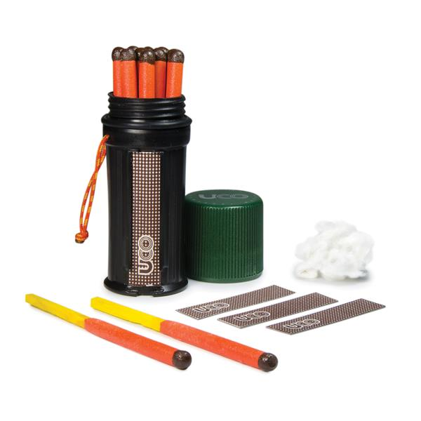
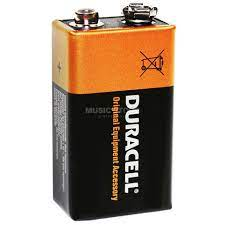
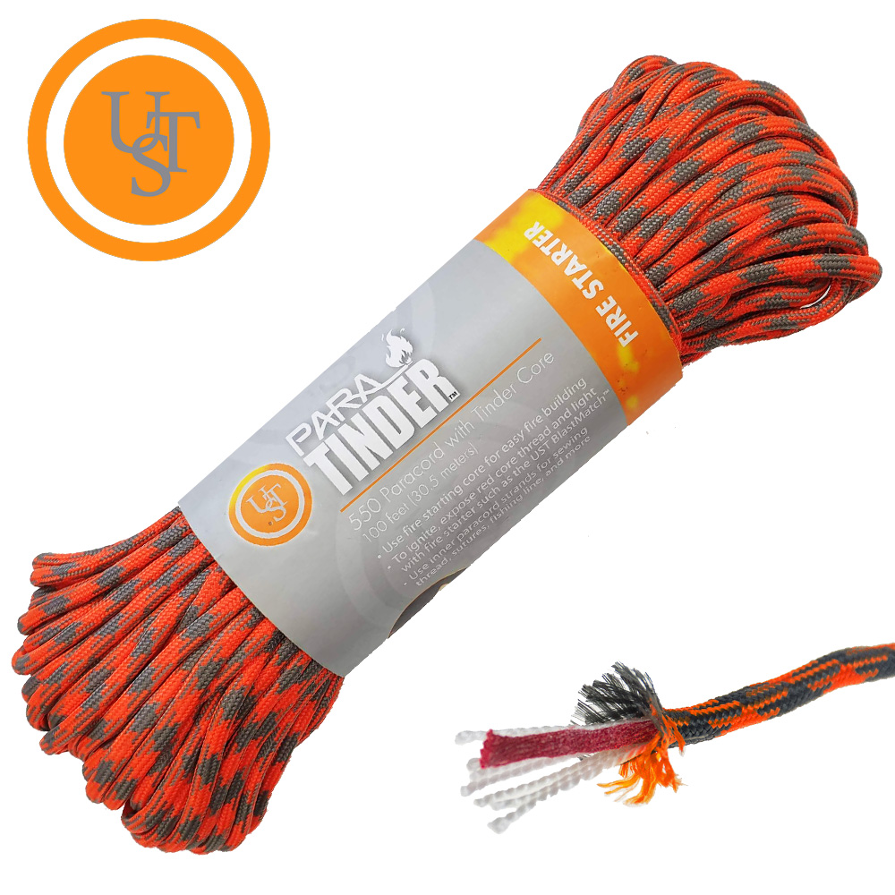
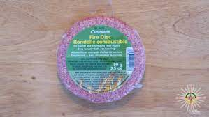
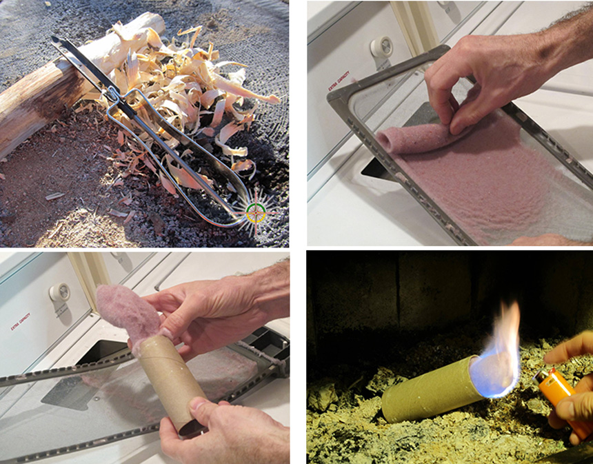
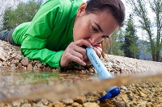
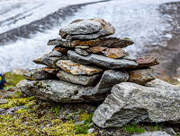
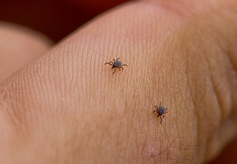
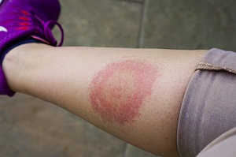

10 Choses que tous les randonneurs devraient savoir.
Randonner, ce n'est pas seulement savoir marcher sur un sentier, c'est aussi connaitre comment s'habiller et s'équiper adéquatement ainsi que pallier à toutes les situations d'urgence ou de survie. Voici une dizaines de conseils, trucs et astuces essentiels à maîtriser avant de partir en rando.
1. Allumer un feu.
1. UTILISER DES ALLUMETTES MAGIQUES
L’ensemble Titan du fabricant Uco est un contenant étanche qui contient 12 allumettes imperméables et surdimensionnées, qui brûlent de 20 à 30 secondes, peu importe les conditions (pluie, vent, neige…).
2. FROTTER UNE PILE DE 9 VOLTS À DE LA LAINE D'ACIER
 En frottant les deux pôles d'une pile de 9 volts sur les fines fibres d'une laine d’acier, celles-ci produisent un contact entre les électrodes de la pile et se liquéfient pour former du métal en fusion. En soufflant légèrement sur l'acier, la chaleur s’intensifie… assez pour enflammer des brindilles, du papier ou encore un allume-feu.
3. UTILISER UNE CORDE INFLAMMABLE
 Toujours utile pour suspendre de la nourriture à l'abri des bêtes, attacher une bâche ou même improviser une ceinture ou des lacets de fortune, la corde est un accessoire indispensable pour tout pleinairiste. Le fabricant américain Ultimate Survival Technologies a donc pensé y insérer une mèche inflammable (rouge) afin de transformer la corde en allume-feu.
4. UTILISER UNE RONDELLE COMBUSTIBLE
 Rondelle composée de sciure de bois et de cire inodore. Elle s’effrite très facilement dès l’ouverture du paquet - qui n’est malheureusement pas conçu pour se refermer. Pensez donc à prendre un sac refermable avant de partir.
5. UTILISER DES ALLUME-FEUX MAISON
 Il est toujours pratique de fabriquer soi-même des allume-feux maison, les plus simples et les plus abordables qui soient. Au lieu d'utiliser de la ouate, on peut par exemple récolter la mousse du filtre de la sécheuse et la garder au sec, dans un sac à sandwich, en attendant le moment où elle servira à allumer un feu. On peut aussi emporter avec soi un éplucheur à légumes, léger et peu encombrant, pour faire des copeaux de bois à partir d'une branche d'arbre. Une autre méthode infaillible pour créer un beau feu de joie en camping!
2. 10 éléments à avoir dans sa trousse de premiers soins
1- gants médicaux
2- seringue à eau
3- pince à épiler
4- crème antibiotique
5- pansements hydrogel
6- pansements fins et élastiques pour ampoules
7- compresses de gaze stérile en carrés de petites et de grandes dimensions
8- ruban adhésif médical
9- bandage élastique avec attache
10- médicaments personnels
3. Alléger son sac à dos
2. UTILISEZ UN SAC À DOS PLUS PETIT Ce n'est pas la logique de tout le monde, mais il s'agit d'une astuce non négligeable pour se forcer à randonner plus léger. La limite d'espace vous incitera à n'emporter que l'essentiel. Vos épaules vous en remercieront!
3. INVESTISSEZ DANS LES TROIS ESSENTIELS L'économie de poids la plus considérable vient généralement de trois éléments essentiels : le sac à dos lui-même, l'équipement pour dormir (sac de couchage et matelas de sol) et la tente, qui ne devraient pas excéder 4 kg (9 lbs) au total.
Sac de couchage et matelas de sol : le duvet est la meilleure option en termes de légèreté, de durabilité et de compression pour les sacs de couchage. Pour leur part, plusieurs manufacturiers de matelas de sol ont lancé des modèles ultracompressibles et isolés très intéressants. Tente : encore une fois, songez à partir avec un abri plus petit, mais d'autant plus léger; pourquoi prendre une tente 2 places si vous êtes seul? Après tout, on n'y fait que dormir, non ?
4. LAISSEZ VOS VÊTEMENTS DE RECHANGE AU PLACARD Oubliez le pyjama et les bobettes propres pour la troisième ou la quatrième journée! Une exception cependant : apportez au moins deux paires de bas, une pour la randonnée et une pour le camp, afin de ne pas garder les pieds humides avant de vous coucher.
5. UTILISEZ UNE BOUTEILLE D'EAU SOUPLE
6. LIMITEZ VOS USTENSILES DE CUISINE On peut sacrifier un peu de confort au profit de la légèreté en mangeant à même la casserole dans laquelle on a préparé son repas.
7. OPTEZ POUR UN RÉCHAUD PLUS COMPACT
8. CHANGEZ DE SYSTÈME DE TRAITEMENT DE L'EAU

Avez-vous déjà envisagé investir dans une gourde filtrante, un crayon purificateur d'eau ou encore une paille de type LifeStraw (autour de 50 g)? Tous sont très sécuritaires et vraiment plus légers qu'un filtre à pompe ordinaire (500 g). Sans compter l'espace gagné dans le sac à dos. On peut aussi penser aux simples comprimés et gouttes de purification d'eau, qui remportent la palme de la légèreté mais qui demandent 30 minutes de repos avant d'être efficaces.
4. Se réchauffer en moins de 2 minutes
1. SOUFFLER DANS SES GANTS Cette technique est toutefois éphémère et il ne faut pas l'utiliser trop souvent pour éviter la condensation et donc l'humidité au niveau des doigts.
2. FAIRE DES JUMPING JACKS Jumping jacks, squats et rotations des bras sauront vous réchauffer en quelques minutes à peine. 10 jumping jacks suivis de 10 extensions rapides de chaque bras (comme si vous étiez à un concert de rock) puis de chaque jambe. Recommencez par 9 jumping jacks, 9 extensions et ainsi de de suite en ordre décroissant. Ne vous arrêtez surtout pas avant d'avoir atteint 0, en pensant que la méthode ne marche pas. Pareil pour les squats et les rotations des bras. Elles ont toutes comme effet de réactiver la circulation sanguine des extrémités et de diffuser la chaleur générée par le corps jusqu'au bout des pieds et des mains pendant plusieurs minutes. Testées et approuvées lors d'une journée de ski hors-piste par -26° (ressenti -35°) dans les Chic-Chocs.
3. RÉCHAUFFER SES MAINS SOUS LES AISSELLES, SUR SON VENTRE OU AU NIVEAU DU COU Pour être plus efficace, on doit mettre ses mains nues contre son corps.
4. LA DANSE DES PINGOUINS Il arrive souvent, en escalade, en ski ou en randonnée avec des bâtons, que le sang ne circule plus adéquatement au niveau des mains en raison de leur position surelevée. On peut, pour contrer cela, faire ce que certains appellent "la danse des pingouins" : bras tendus le long du corps, on lève et on abaisse successivement les épaules une bonne vingtaine de fois. Le but : contrer la vasoconstriction des vaisseaux sanguins et faire "redescendre le sang" dans les mains.
5. BOUTEILLE NALGENE Si vous avez votre réchaud avec vous et une bouteille en plastique hermétique (style Nalgene), remplissez cette dernière d'eau bien chaude et servez-vous en comme bouillotte au creux de vos mains ou dans votre manteau. L'effet sera presque instantané et durera une bonne demi-heure (selon la température extérieure).
D'AUTRES MÉTHODES EN VRAC
- Utiliser des chaufferettes (comme des Hotshots) dans ses gants et ses bottes
- Desserrer ses chaussures
- Faire la danse Haka des Maoris (!)
- Changer de bas ou de gants quand ils sont humides
- Serrer les poings à l'intérieur de ses gants
- Frictionner ses mains et ses pieds
- Manger et boire un liquide bien chaud
- etc.
5. 4 Choses à (ne pas) faire pour réduire son empreinte écologique
ERREUR N°1 : UTILISER UN SAVON BIODÉGRADABLE DANS UNE RIVIÈRE Contrairement à ce que l'on pourrait croire, le savon biodégradable ne l’est pas dans l’eau, mais plutôt au contact des sols. Une solution plus écologique serait de se laver les mains, le corps ou encore de faire sa vaisselle dans un récipient pour ensuite verser l’eau savonneuse dans un trou, à plus de 60 mètres d'un cours d’eau. Toutefois, la solution idéale est tout simplement d’éviter l’utilisation de savon en nature.
ERREUR N°2 : JETER SA PELURE DE BANANE OU SA PEAU D'ORANGE DANS LA NATURE Sûrement savez-vous que vous devez rapporter tout ce que vous emmenez en nature. Contrairement à la croyance populaire, leur vitesse de décomposition peut être très lente - jusqu’à deux ans pour les pelures de banane et d’orange. Inutile de vous rappeler qu’il ne faut pas nourrir les animaux sauvages. Sans vous en rendre compte, c’est pourtant ce que vous faites.
ERREUR N°3 : MARCHER HORS DU SENTIER LORSQU'IL EST BOUEUX Vous devriez toujours marcher au milieu du sentier, même s’il est boueux. Pour évitez de l’élargir et de créer des sentiers parallèles. Il est donc primordial de toujours utiliser les surfaces établies pour ne pas endommager de nouvelles zones.
ERREUR N°4 : CRÉER UN CAIRN EN PIERRE SUR UN SENTIER

Les cairns « officiels » ont été construits pour indiquer le chemin à suivre aux randonneurs. Il est donc important d’éviter d’en créer de nouveaux ou de modifier ces derniers pour une question d'orientation et de sécurité. Au-delà de la sécurité des randonneurs, en déplaçant une roche, vous êtes peut-être en train de détruire l’abri d’un insecte, d’un poisson ou d’un animal, ce qui le rend plus vulnérable. Vous pouvez également contribuer à l’augmentation de l’érosion puisque les roches sont plus solides que les sols environnants, et elles les protègent de ce phénomène naturel.
6. Bien ajuster son sac à dos
1. Acheter un sac à sa taille.
Les bons sacs à dos à grande capacité (55 litres et plus) sont généralement offerts en deux, voire trois différentes tailles : petit, moyen et grand. Si vous avez à mesurer votre dos afin de faire la bonne sélection de taille (achat en ligne ou commande spéciale) sachez que la mesure se prend sur la colonne vertébrale, à partir de la hauteur de la crête iliaque (partie supérieure des hanches) jusqu’à la vertèbre cervicale sept, soit celle qui fait protubérance lorsqu’on penche complètement la tête vers l’avant.
2. Ajuster la hauteur des bretelles.
Généralement, on a le choix entre deux à cinq différentes hauteurs, qui s'ajustent à l’aide d’un système au centre du dos du sac. Le haut des bretelles doit parfaitement épouser les épaules, du devant jusqu’à l’arrière. Pour vérifier que la hauteur des bretelles est adéquate, il faut mettre le sac sur son dos et bien boucler la ceinture de taille.
3. La ceinture de taille.
Contrairement à ce que l’on peut croire, la majeure partie du poids du sac doit reposer sur les hanches, et non pas sur les épaules. On peut même avancer que le rapport « hanche - épaules » du poids du sac devrait tourner autour de 75 / 25. Un bon ajustement de la ceinture de taille est donc fondamental. Pour un support optimal, la ceinture de taille doit être bouclée assez serrée, et positionnée de façon à ce que le centre des coussinets arrive sur le dessus des crêtes iliaques.
4. Les bretelles.
Une fois le sac bien ancré sur les hanches, on peut maintenant tirer sur les courroies des bretelles afin de parfaire l’ajustement. Il faut faire attention de ne pas trop tirer, sinon les bretelles auront tendance à creuser à l’intérieur des épaules et (lentement mais sûrement) causer un endolorissement musculaire, voire tendineux. Une fois la ceinture de taille et les bretelles bien ajustées,il faut rajuster la hauteur des bretelles (étape #2) si un espace persiste entre les bretelles et l’arrière des épaules.
5. Ajustement de finition.
Pour bien ficeler le tout, il faut terminer en tirant sur :
- La sangle de poitrine. Afin d’éviter que celle-ci ne s’écarte trop vers l'extérieur, on peut la faire glisser de façon à ce qu’elle se retrouve à environ 4 ou 5 cm en dessous des clavicules.
- Les sangles de rappel de charge, pour ramener légèrement le sac vers l’avant et éviter qu’il se balance de l’avant à l’arrière, lors de la marche. Il faut faire attention de ne pas trop tirer, ce qui ferait lever les bretelles du haut des épaules en ajoutant une pression indue sur l’avant.
- Les sangles de ceinture de taille. Elles augmentent la stabilité au bas du sac.
Il faut enfin se rappeler que, hormis l’ajustement de hauteur des bretelles, tous les autres ajustements doivent être constamment revus lors de la randonnée. Dès qu’on sent un malaise, il faut rajuster pour « changer le mal de place » !
7. Savoir agir en cas d'urgence
Un randonneur couvert trop légèrement prend froid lors d’une pause, un skieur se tord une cheville et attend les secours assis dans la neige, un grimpeur en escalade de glace se refroidit sur la paroi en plein vent, une personne tombe à travers la glace ou elle est trempée sous la pluie...
Reconnaître les premiers symptômes :
Comportement ralenti : la personne a moins d’entrain, elle semble avoir envie de dormir et elle manque de coordination dans ses mouvements.
Tremblements : son corps est secoué de frissons, ses lèvres bleuissent, ses extrémités blanchissent, elle finit par ne plus ressentir le froid dans ses membres.
Réactions paradoxales : sa respiration se fait plus rapide, les frissons ralentissent, et elle commence à se déshabiller ou elle continue de marcher, pédaler ou grimper alors qu’elle est allongée et à demi consciente.
Prodiguer les premiers soins :
Manipuler la personne avec soin : l’allonger sur une couverture de survie et l’empêcher de bouger pour éviter tout emballement de son cœur (arythmie).
Réchauffer la personne : il faut lui enlever ses vêtements mouillés et la couvrir de plusieurs couches de vêtements secs, surtout au niveau de la tête, du cou et du thorax.
Trouver un abri : marcher doucement jusqu’à un refuge, construire un pare-vent de neige ou s’abriter derrière une barrière naturelle (forêt, falaise, roche).
Surveiller les engelures (nez, joues, oreilles, mains, pieds) et les immerger dans l’eau tiède ou les couvrir d’une compresse humide. Surtout pas de chaleur sèche d’un feu, par exemple.
Agir en cas d’urgence :
Savoir arrêter l’activité à temps et rebrousser chemin si la situation se dégrade (météo difficile ou condition physique précaire de la personne). Déplacer la personne à l’horizontale sur un traîneau de fortune (à l’aide de skis par exemple) jusqu’à un abri en attendant les secours. Veiller à ce que la personne réchauffée ne retombe pas en hypothermie et lui faire boire une boisson chaude et sucrée.
Un triathlonien en pleine épreuve souffre de maux de tête et de malaises, un randonneur en montagne n’a pas une assez grande réserve d’eau, un skieur pris dans une tempête n’a rien pour faire bouillir la neige avant de la boire…
Reconnaître les premiers symptômes :
Soif : la personne n’a plus de salive, elle a la bouche et les lèvres sèches et elle a du mal à déglutir.
Confusion : la personne n’est plus capable de raisonner rapidement ni de manière pertinente.
Peau sèche et non élastique : la peau reste blanche et un pli cutané se forme lorsqu’on la pince.
Urine foncée ou absente : la personne urine moins fréquemment ou n’urine plus du tout.
Prodiguer les premiers soins :
Se mettre à l’ombre : en cas de forte chaleur, il faut se retirer dans un endroit frais et enlever les vêtements foncés qui emmagasinent la chaleur.
Diminuer le niveau d’activité : s’activer fait transpirer et perdre une quantité non négligeable d’eau au corps, il faut donc demander à la personne de rester calme et inactive.
Localiser une source d’eau : il faut repérer un ruisseau et y puiser de l’eau à l’aide d’un filtre (à travers un linge propre dans le pire des cas) ou bien faire fondre de la neige avant de la boire.
Agir en cas d’urgence :
Rebrousser chemin ou chercher une source d’eau si les réserves de tout le groupe sont épuisées. Appeler les secours si la personne est évanouie ou ne retrouve pas une hydratation normale rapidement.
Un cycliste sur route se fait frapper par une voiture, un skieur se blesse dans un sous-bois, un randonneur se fait mordre par un animal sauvage, un grimpeur reçoit une roche lors d’une ascension extérieure...
Prodiguer les premiers soins :
Immobiliser la personne et vérifier son état de conscience : si la blessure est à la tête, au cou ou aux épaules, il faut faire s’allonger la victime, stabiliser sa tête entre ses avant-bras et l’empêcher de bouger tout en lui parlant et en vérifiant que ses voies respiratoires ne sont pas obstruées.
Repérer les plaies et comprimer les saignements ou immobiliser le membre blessé.
Vérifier que les mains et les pieds ont une température et une couleur normales.
Agir en cas d’urgence :
Déplacer la victime seulement si son état le permet ou que sa sécurité en dépend (passage de voiture sur la route, risque d’éboulements ou d’avalanche, animal sauvage à proximité).
En cas de blessure grave au crâne, au visage (surtout aux yeux), aux épaules, aux hanches ou aux genoux, il faut appeler les secours.
En cas de luxation d’épaule, il faut consulter un médecin dès que possible si la sensation dans les doigts ou la main, leur mouvement ou leur couleur sont altérés.
8. PRÉVENIR LES TIQUES ET LES MOUSTIQUES
LA COUPABLE

C’est la bactérie Borrelia burgdorferi qui cause la maladie de Lyme. Elle est transmise par la tique à pattes noires, dénommée Ixodes scapularis. L’Institut national de santé publique du Québec (INSPQ) estime que 24 % des tiques étaient porteuses de la bactérie, en 2019, contre 18 % en 2018.
AVANT DE SORTIR
Étant donné que les tiques s’accrochent à la peau, il est recommandé de se couvrir complètement le corps en optant pour des vêtements longs, des chaussettes, un chapeau et des chaussures fermées. Pour plus de précautions, on peut aussi rentrer ses pantalons dans ses bas et son chandail dans son pantalon. Porter des vêtements clairs aidera aussi à bien repérer les tiques. Aspergez-vous Pour réduire le risque d’être piqué par une tique, la Santé publique recommande d’utiliser un chasse-moustiques à base de diéthyltoluamide (DEET) ou d’icaridine. Restez dans les sentiers balisés Pour trouver un bon repas de sang, les tiques grimpent sur les végétaux et agitent les pattes avant en attendant la venue d’un hôte. En demeurant dans les sentiers, vous diminuez les risques de vous faire piquer. Près de votre site de camping, évitez le plus possible les herbes hautes et portez des vêtements longs si vous devez y aller.
AU RETOUR
L’inspection de routine De retour à la maison, prenez le temps de faire une inspection générale de vos vêtements, des enfants, des animaux de compagnie et de l’équipement (comme le sac à dos), et ce, à l’extérieur de la tente pour éviter d’introduire les tiques à l’intérieur. Prenez le temps de bien regarder dans les zones difficiles d’accès, comme les cheveux, le cou, l’aine, le nombril et les aisselles. Si vous trouvez une tique Vous devez retirer la tique le plus rapidement possible, car le risque de contracter la maladie est faible si la tique reste accrochée à la peau moins de 24 heures. Tous les détails pour vous en débarrasser de façon sécuritaire se trouvent dans le site suivant : quebec.ca/sante/conseils-et-prevention.
SYMPTÔMES

Si une rougeur circulaire s’agrandit de jour en jour sur votre peau et qu’elle dépasse 5 cm de diamètre, consultez un médecin rapidement. Les autres symptômes incluent la fièvre, la fatigue, les maux de tête, des raideurs à la nuque ainsi que des douleurs musculaires et articulaires.
TRAITEMENT
Si la tique est restée accrochée entre 24 et 72 heures, un traitement préventif est offert dans certains secteurs des régions des Cantons-de-l’Est, de la Montérégie, de la Mauricie, du Centre-du-Québec et de l’Outaouais. Si vous présentez des symptômes sérieux, demandez à votre médecin de passer un test de dépistage. Si le test est positif, un antibiotique utilisé de deux à quatre semaines peut guérir l’infection. Le traitement de la forme avancée de la maladie est plus complexe et nécessite davantage de recherche, comme le soutient l’Association québécoise de la maladie de Lyme.
EN CHIFFRES…
43 cas en 2012
143 cas en 2013
125 cas en 2014
160 cas en 2015
177 cas en 2016
327 cas en 2017
304 cas en 2018
461 cas en 2019
Augmentation de 260 % de 2016 à 2019, et de 1072 % de 2012 à 2019
LA TENTE
>> Vérifiez la moustiquaire de votre tente avant de partir, et réparez les trous;
>> Plantez votre tente dans un espace dégagé et aéré;
>> Éloignez-vous des étangs d’eau stagnante, des lacs qui abritent des barrages de castors, des poteaux électriques, des bûches en décomposition et des toilettes sèches;
>> Évitez les forêts de conifères entre la fin juin et le début août, et préférez les forêts de feuillus;
>> Ne vaporisez jamais d’insectifuges à l’intérieur de la tente pour éviter les intoxications, ni l'extérieur d'ailleurs : le produit pourrait endommager sa membrane imperméable.
LES CAMPEURS
>> Privilégiez les insectifuges à base de icaridine/picaridine ou d'huiles essentielles de citronnelle. Le DEET est efficace mais potentiellement néfaste pour la santé.
>> Portez des vêtements amples et clairs: les moustiques sont attirés par la chaleur créée par les vêtements moulants et de couleur foncée;
>> Couvrez les parties du corps qui sont alléchantes (cou, oreilles, poignets, chevilles) : manches longues, bas de pantalon dans les chaussettes, chaussures fermées, foulard autour du cou et casquette ou chapeau sur la tête sont de mise;
>> Évitez les parfums et déodorants parfumés;
>> Évitez de rester longtemps dehors, lors du pic de présence des moustiques (au petit matin juste avant le lever du soleil, ainsi que le soir, après le couchant).
LE SOIR
>> Allumez un feu de camp avant la tombée du jour car les moustiques détestent la fumée;
>> La nuit, utilisez la lumière rouge de votre lampe frontale : elle attire moins les insectes que la blanche;
>> Pensez à utiliser une moustiquaire de tête pour cuisiner et pour toute tâche nécessitant d'avoir les mains libres.
9. S'HABILLER ADÉQUATEMENT EN MULTICOUCHES
La fameuse technique des pelures d’oignon est composée de trois étapes :
1. LA COUCHE DE BASE
Il s’agit de la couche de vêtements en contact immédiat avec la peau. Des camisoles aux sous-vêtements, le choix de vêtement pour les couches de base est varié. Dans tous les cas, les couches de base sont conçues pour sécher rapidement et évacuer l’humidité du corps. Favorisez donc les coupes moulantes afin de maximiser le confort et l’efficacité technique. De manière générale, dans cette catégorie, on retrouve surtout des produits faits de fibres synthétiques (notamment le polyester) ou de laine de mérinos. Ces derniers sont particulièrement intéressants pour les activités de haute intensité ou les longues randonnées, car la laine de mérinos a la particularité d’être légère et de ne pas retenir les odeurs.
2. LA COUCHE INTERMÉDIAIRE
Par temps froid, c’est ici que tout se joue. La couche intermédiaire, c’est la couche d’isolation, celle qui servira à emprisonner la chaleur produite par votre corps et à le maintenir à une température confortable. Il existe de nombreux styles de couches intermédiaires dont les avantages varieront selon le type de fibre qui les constitue. Les couches intermédiaires en duvet sont parfaites pour les activités à plus faible intensité (ski alpin, randonnée pédestre… ou même le soir autour d’un feu de camp). Légères et particulièrement compactes, elles sont les grandes championnes quand il est question de ratio chaleur-poids, quoiqu’elles gèrent mal l’humidité. Les couches de bases en fibres synthétiques comme le polyester ou la laine polaire sont ainsi plus indiquées pour les activités à haute intensité (ski de fond, raquette, etc.), car elles respirent bien tout en vous gardant au chaud.
3. LA COUCHE EXTERNE
Cette dernière couche fera office de rempart contre les aléas de la météo. Afin de perpétuer le travail des couches précédentes, assurez-vous que votre couche externe soit bien imperméable, mais surtout qu’elle respire. C’est ici qu’on retrouve les coquilles imper-respirantes qui évacueront l’humidité interne, tout en vous protégeant du vent, de la pluie et de la neige. Pour la couche externe, choisissez un vêtement qui fournira suffisamment d’espace pour ne pas gêner vos mouvements une fois enfilés par-dessus les autres épaisseurs. Superposer les couches est une bonne manière de rester confortablement au chaud par temps frais, quand vous pratiquez vos activités favorites. Cependant, n’oubliez pas qu’une grande partie de la chaleur corporelle s’évacue par les extrémités. Tâchez de toujours avoir à portée de main une paire de gants, une tuque et un foulard. Surtout, n’oubliez pas la paire de chaussettes en extra qui peut faire toute la différence auprès des pieds humides.
10. SURVIVRE EN FORÊT L'HIVER
Pour commencer, vous passerez par toute une gamme d’émotions. Frustration, désorientation, peur des éléments, de la noirceur ou des animaux. Le remords d’avoir entraîné vos comparses si loin en forêt également… Mais c’est seulement lorsque vous accepterez la situation que vous deviendrez efficace, fonctionnel et rationnel.
Faites l’inventaire de tout ce que vous avez en votre possession et en celle des autres membres de votre groupe. Vous y trouverez peut-être des objets oubliés avec le temps qui pourraient vous être très utiles dans la situation actuelle (baume à lèvres, vieux mouchoirs ou ticket de stationnement qui peut servir de combustible, par exemple).
ALLUMER UN FEU
Vos principaux ennemis du moment seront non pas les bêtes féroces ou les zombies apocalyptiques, mais bien le froid, la transpiration et le refroidissement éolien! Il faut donc tout mettre en œuvre pour combattre une éventuelle hypothermie. Économisez au maximum votre énergie tout en étant efficacement passif. Ne faites rien pour rien. Si vous allez dans une direction, profitez-en pour rapporter un peu de combustible car il en faudra une montagne pour entretenir votre feu, la nuit. Le lichen, l’écorce de bouleau ou la technique du hérisson seront de bons moyens d’allumer votre précieux feu. Choisissez de petites brindilles au départ pour ensuite grossir le diamètre de votre combustible à mesure que la flamme s’intensifiera. Un petit conseil: celle-ci doit toujours toucher le combustible. Pensez à allumer votre feu à l’abri du vent, car sinon, vous devrez soit creuser dans la neige jusqu’au sol, soit faire un fond de grossières bûches pour empêcher le feu de s’enliser dans la neige et de mourir étouffé par manque d’oxygène. Cette source de chaleur sera votre réconfort thermique et mental, votre éclairage de proximité et votre phare pour rejoindre le camp en cas d’éloignement.
CONSTRUIRE UN ABRI
Avant que les conditions météo ne se détériorent (vent, accumulation de neige, grêle…), construisez un abri. Si vous avez eu la présence d’esprit d’emporter une bâche, vous allez sauver beaucoup de temps et d’énergie en installant celle-ci dos au vent et face au feu. Assez près de celui-ci pour sentir sa chaleur mais pas trop, pour éviter un risque d’incendie. Juste bien positionnée de manière à ce qu’elle vous protège de la brise mais sans que la fumée du feu ne s’y engouffre. Si vous n’avez pas de bâche et qu’il vous reste assez d’énergie, vous pourriez entreprendre la construction d’un quenzhee (trois heures comprenant le durcissement) ou encore un abri en appentis des plus classiques fabriqué d’arbres et de branchages, si vous avez un outil de coupe sous la main (scie, hache, machette, etc.)
S'ISOLER DU FROID
Maintenant, vous avez un abri et un feu. Vous allez devoir consacrer beaucoup de temps à l’entretien des flammes pour profiter de leur chaleur, assis ou couché devant, bien emmitouflé dans les vêtements supplémentaires que vous avez apportés. C’est à ce moment que vous allez peut-être constater qu’il manque quelque chose à votre confort... Isolez-vous du sol, avec toute matière disponible. Vous avez un matelas de sol? C’est excellent! Des branches de conifère peuvent également faire le travail si vous en accumulez une trentaine de centimètres, pour une certaine efficacité, sinon… asseyez-vous sur votre sac à dos.
S'HYDRATER
Le temps sec de l’hiver, ajouté à la transpiration, font en sorte qu’il est très important de bien s’hydrater. Vous avez encore une petite quantité d’eau avec vous? Conservez-la près de votre feu, mais pas trop non plus. Votre main nue dictera la distance à respecter entre le feu et votre gourde. Vous n’avez plus d’eau? Faites fondre de la neige dans une bouteille en plastique (en gérant la distance avec la flamme) ou encore dans un contenant en écorce. Mais les plus prévoyants d’entre vous auront une bouteille en acier inoxydable, une tasse ou une gamelle dans leur sac à dos.
SIGNALER SA PRÉSENCE
Pour être secouru, il faut être repéré. Signalez alors votre présence. Les moyens technologiques sont très diversifiés pour appeler au secours (balise GPS, entre autres), mais si vous n’en possédez pas, il faudra se tourner vers les moyens classiques : le visuel! Les contrastes de couleurs avec la neige attireront l’oeil des secouristes : un sac à dos, des vêtements colorés étalés par terre ou même un bandana en guise de drapeau. Sans oublier le fameux S.O.S de grande dimension (tracé dans la neige ou fabriqué avec des branches) dans un endroit dégagé. La lumière de votre feu ou encore le faisceau de votre lampe frontale sont aussi d'efficaces moyens de signalisation nocturne. Pensez également à utiliser le sifflet intégré aux sangles de certains sacs à dos pour un signalement sonore.
Les techniques énumérées ci-dessus sont basées sur une logique chronologique et peuvent varier selon le fil des événements. Elles faciliteront sûrement ce passage obligé en forêt en les respectant. Il reste néanmoins que le secret pour augmenter vos chances de survie réside dans la préparation et la prévoyance dans chacune de vos expéditions en plein air.
Nourriture en randonnée
L’alimentation, carburant pour l’organisme
Pendant un effort physique, l’organisme puise énormément dans ses réserves. D’où l’importance de réalimenter régulièrement le corps en glucides. Il ne faut donc pas hésiter à faire des pauses pour vous ravitailler lors de la randonnée.
Il vaut mieux manger léger mais régulièrement pendant la marche de façon à maintenir la glycémie à un niveau constant sur toute la durée de l’effort. Pensez aussi à vous alimenter de manière équilibrée pour varier les nutriments apportés.
Privilégiez les en-cas qui permettent de grignoter régulièrement pendant les pauses et apporter ainsi du sucre facilement assimilable par l’organisme. Il faut en revanche éviter les sucreries et les bonbons qui n’apportent rien et surtout donnent soif.
Nourriture en randonnée et poids du sac
Décider quoi emmener à boire et manger dans son sac est souvent un casse-tête. Il faut emmener assez de nourriture pour toute la durée de la marche… sans que celle-ci ne prenne trop de place ou ne pèse trop lourd.
En ce qui concerne les longues randonnées en bivouac ou les treks, beaucoup de randonneurs ont recours aux aliments séchés à froid (lyophilisés). C’est ce qu’il se fait de mieux si on part pour plusieurs jours loin de la civilisation. Ces produits, légers et faciles à préparer, sont parfaits pour les longues randonnées.
S’alimenter pendant la marche
La règle d’or en ce qui concerne la nourriture en randonnée est la suivante : petit, léger, nutritif.
Il est préférable de manger en petites quantités et régulièrement pendant la marche. Ne vous chargez pas avec des gros conditionnements, des emballages volumineux ou trop lourd. A la place, préférez mettre la quantité d’aliments que vous consommerez dans de petits sacs de congélation zippés. Astuce de scout. C’est pratique, et ça allège le sac à dos.
Les en-cas
Voici quelques idées de snacks nutritifs et peu encombrants à emporter dans vos petits sacs :
- Fruits secs (raisins, abricots, banane…)
- Barres protéinées
- Barres de céréales
- Pates de fruit
- Berlingots de lait concentré
- Biscuits (on évite les biscuits au chocolat si il fait chaud – ca fond !)
- Céréales de petit déjeuner
- Noix, noisettes, ou autres arachides (proscrits pour les allergiques)
- Compotes de poche
La pause du midi
Idéalement, votre petit pique-nique sera équilibré. Il contiendra :
- Des glucides complexes – comme par exemple du pain, afin de fournir de l’énergie a vos muscles.
- Des protéines – par exemple du jambon, des œufs durs, du fromage. Pensez par contre que si vous aller marcher toute la journée en pleine chaleur ces aliments peuvent tourner… Il faudra donc les mettre dans un sac isotherme, et placer votre bouteille d’eau froide dans ce même sac. Le saucisson est aussi une bonne option. En plus le saucisson étant salé, il aide à limiter les crampes (ça c’est ce que je me dit pour avoir bonne conscience). Pas très diététique me direz-vous… mais il faut savoir se faire plaisir aussi !
- Des fruits frais
Cela va sans dire, le repas pris le midi ne doit pas être trop copieux sous peine d’avoir du mal à repartir.
La veille et le matin du départ
Il faut manger correctement la veille – idéalement des sucres lents de type pâtes, riz ou pommes de terre que vous pourrez accompagner de viandes maigres ou de légumes verts. Ils vous apporteront l’énergie nécessaire à l’effort. Et bien évidemment, rien de tel que de prendre un bon petit déjeuner avant de partir le matin.
L’importance d’une bonne hydratation
Prévoir les quantités d’eau à emporter en fonction des points de ravitaillement sur le sentier. Basez-vous sur vos expériences pour déterminer votre consommation. La quantité d’eau nécessaire est propre à chacun, mais influencée par la météo, la durée et quantité de l’effort.
Bien prévoir ses réserves d’eau est crucial. Malheureusement, si vous ne pouvez pas remplir vos bouteilles en chemin, il vous faudra porter plus de poids dans votre sac. Nous vous conseillons de prendre au minimum 2 litres d’eau pour une journée de randonnée.
En hiver, on ressent moins la soif. Mais on doit tout autant penser à s’hydrater ! Le mieux sera donc de se munir d’un thermos contenant une boisson chaude (thé, tisane…).
Les boissons énergétiques sont à consommer avec modération. Elles se présentent sous forme de poudres solubles à préparer soi-même, ou toutes prêtes en bouteille. Elles contiennent des éléments qui permettent une réhydratation rapide en étant plus rapidement assimilables par l’organisme et les muscles du corps.
Les sodas sont à éviter car ils sont trop sucrés et ne désaltèrent pas. Enfin, l’alcool est à bannir de votre sac car il déshydrate l’organisme.
Déshydrater sa nourriture pour la randonnée
En longue randonnée, lorsqu’on transporte ses victuailles dans le sac à dos, le volume et le poids des aliments deviennent importants. La déshydratation et la lyophilisation sont deux méthodes qui, non seulement permettent de rendre les aliments plus légers et moins volumineux pour le transport, mais assurent également leur conservation. En effet, la réduction de l’humidité diminue significativement le développement des microorganismes. Cela diminue aussi certaines réactions enzymatiques comme le rancissement et le brunissement.